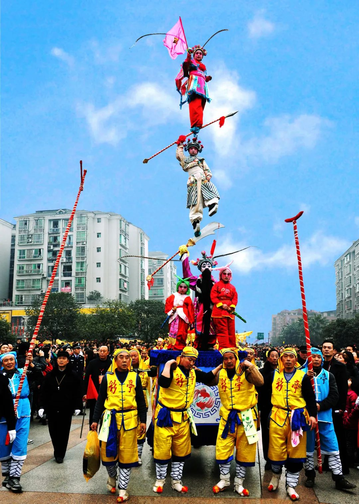

旅游资讯
旅游资讯
天冷了，达川也穿上毛衣啦~
2024-12-11快来看看AI眼中的万源大雪有多美！
2024-12-11央妈盛赞的宣汉羊肉格格，你尝了吗？
2024-12-05省委宣传部副部长 省广播电视局党组书记 局长李晓骏来达调研
2024-12-05渠县“最美银杏”藏不住啦，快来和家人朋友来这些地方打卡
2024-12-05万源一到秋冬就满眼惊艳
2024-11-30- 巴人故里古代巴人曾在达州地区创造了灿烂的文明，境内罗家坝遗址、城坝遗址是长江上游古代巴人和巴文化中心遗址的发源地
- 红色达州达州是川陕革命根据地的重要区域，红四方面军对敌作战的主战场
- 中国气都达州是国家重要的能源资源战略基地，是川气东送工程的起点，天然气资源总量3.8万亿立方米
- 中国汉阙之乡全国仅存二十处汉阙，达州就有六处七尊，其中冯焕阙和沈府君阙，威仪轩昂，苍劲挺立，刚毅大气
- 中国黄花之乡达州市渠县，盛产黄花，花色鲜亮，香气馥郁、肉头肥厚
- 中国苎麻之乡达州市大竹县，苎麻种植面积和年产量均居全国首位
- 中国乌梅之乡达州市达川区，种植乌梅历史悠久，是乌梅的原生资源地
- 中国醪糟之乡达州市大竹县，醪糟发源地，源于汉、盛于今，历史悠久，相关生产企业是国家醪糟生产标准制定者之一
- 中国橄榄油之都达州市开江县，盛种橄榄油，相关企业是行业国家标准起草单位之一
- 中国富硒茶之都达州是全国三大富硒地区和四川三大主产茶区之一，主产区万源市被中国食品工业协会授予“中国富硒茶之都”称号

